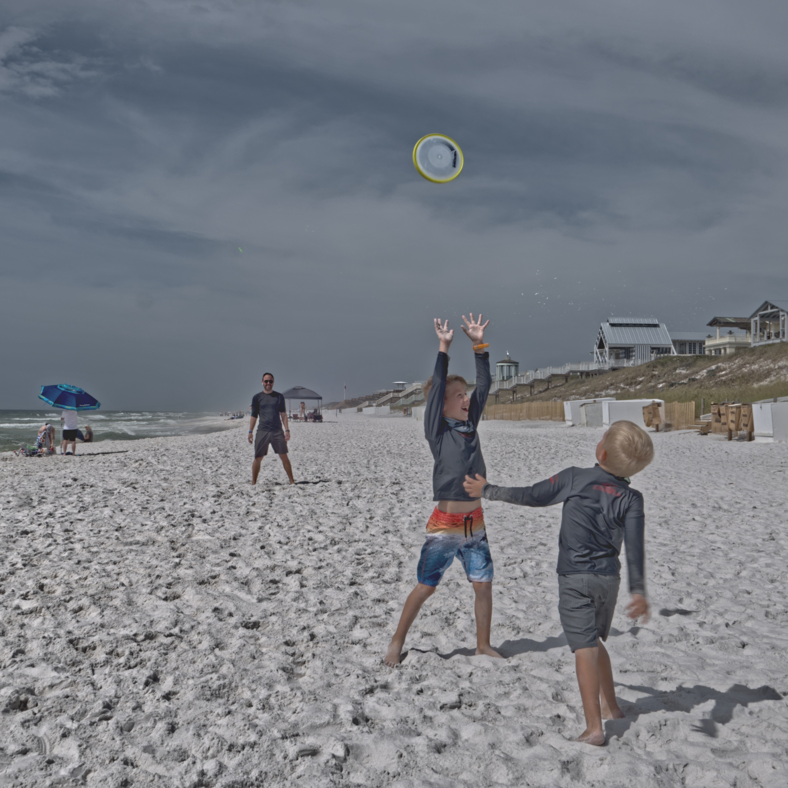

#garden #book #landscape
Botany for Gardeners by Brian Capon is an as the name implies an introduction to Botany for Gardeners.
Botany, if you didn’t know, is “the scientific study of plants, including their physiology, structure, genetics, ecology, distribution, classification, and economic importance.” This book gets into all of that — some parts more than others — but does so in an understandable way. For those of us who may not have degrees in Biology, Horticulture, Plant Sciences, etc. this is a great way to understand plants on a deeper level.
What happens inside a seed after it is planted? How are plants structured? How do plants reproduce? The answers to these and other questions about complex plant processes are in this book. Written in accessible language, this guide allows gardeners and horticulturists to understand plants from the plant’s point of view. Botany for Gardeners includes an appendix on plant taxonomy, a comprehensive index, and dozens of photos and illustrations.
A must have reference book for any gardener!
#destin #travel
Tired of being shut in and not traveling we booked the Wyndham Destin Beach Cottage for the last couple days in February and the first couple in March. Sara’s family wanted to do the trip with is so we booked an extra cottage for them.
They flew and we drove. Bad move on our part. Turns out the bouncing around in the MDX for a couple days in each direction set her shoulder rehabilitation back to the beginning.
Still, a great time we had by all the four days.
Sunday in Seaside: Sunny day, no wind, and a light surf. The boys played on the beach while the woman shopped. Then we lunched at The Great Southern Cafe. After that a stroll around town to view the architecture.
There is a giant mural of Vincent Scully on the side of a building in downtown Seaside. At first I thought they were paying tribute to the famous Dodger play by play announcer for 60 years, but no this Vin Scully was a famous architect. Scully was one of Seaside’s early supporters and influenced many who contributed their design, planning and architecture talents to Seaside, several of them his students at Yale and many more who read his books or attended his lectures in Seaside.
The Back Porch: Of all the “on the beach” seafood gastropubs we’ve tried this is by far the best.
Real Thai Fusion: Great Thai food
Acme Oyster House: An import from NOLA but just as good as their home location.
A day by day journal of our journey.
February 28
Day 1:Friday, February 26, we left home at 8 AM planning on stopping in Shreveport for lunch. We made it to the planned lunch stop in good time but when we entered McAlisters we were told the city was on a boil water mandate and the we only doing takeouts and no drinks. I had seen a First Watch a few blocks back so we enjoyed a great lunch their without drinks. Fortunately we had brought water in our car.
Feb 28, 2021 at 9:34 AM: we left Shreveport planning to stop in Baton Rouge for a snack and then on to our hotel at Ocean Springs, Mississippi. Google wanted us to take a different route taking US 71 just south of Alexandria instead on staying on IS 49 to Osolappsa. We tried it. I liked it because it was not as boring. Went through a few small villages hitting US 190 just before crossing the Red River.
Feb 28, 2021 at 3:52 PM: We decided to stop for a drink and a snack in Baton Rouge. The city's freeways were gridlocked which seemed to be their normal state based upon our few data points. I put a Chili's leaving town into Google Maps which told me their was a 32 minute slowdown between us and the Chili's 12 miles away. So I made a stupid decision and exited the freeway. Found a Chili's 2.9 miles away. We pulled up to that Chili's 17 minutes later and enjoyed a good snack and refreshing drink. Only problem the traffic slowdown was still 32 minutes. So we bit the bullet and drove to the Ocean Springs Mississippi Hampton arriving at 8:30, 12.5 hours after leaving home and totally exhausted. Had a snack in our room and crashed.
Feb 28, 2021 at 4:00 PM: The next morning we woke up at 6:30, still tired, to a fog so thick you had to brush it away with your hand like a cobweb as you walked. We set our slowly from Ocean Springs heading for Mobile and Panera's for a bagel breakfast. The fog lifted while we dined on bagels and coffee and therefore we had a pleasant drive to Destin
Feb 28, 2021 at 4:58 PM: At Destin, dropped our bags off and had a snack at the dive next door, Doug's. Then we picked up the Neustadt's at the airport. We were all hungry and headed to The Back Porch for lunch. Hung out at the condo for awhile. Discovered the AC was not working in our unit. Maintenance worked on it from3PM to 8:30PM. Since our lunch was huge we had a smaller meal at Doug's. Then watched the Maverick's beat Brooklyn and to bed
Feb 28, 2021 at 5:07 PM: Sunday morning. Picked up breakfast for the boys and ice tea for Gwen at McDonalds and then to Starbucks for Sara and I. Breakfast in the Condo. Our adventure for today was Seaside. My how that village has exploded over the years. The boys played on the beach while Gwen and Sara went shopping. We were all starving by then and lunched at The Great Southern Cafe. Then back to the condo for an afternoon nap
Mar 2, 2021 at 9:28 AM: Rained pretty much all day yesterday. We started in the condo and watched movies and read day except for meals. Sara, Gwen, and I lunched at ??? Mike and Sara had a date night so Gwen and I babysat in the condo with Grimaldi's pizza for dinner. Very good pizza
Mar 2, 2021 at 9:31 AM: the boys slept in our unit last night so we all have got up late. No rain this morning but much colder (55) and very windy (16 out of the north). I'm babysitting while the rest are going to OTF
March 3: Going home. Stayed in Baton Rouge overnight at the Doubletree. Good hotel and would stay there again.
For more photos Click Here
#garden #landscape #book
Uprooted, A Gardener Reflects on Beginning Again by Page Dickey is the author’s account of starting over in a new home after 30+ years living and gardening in her previous home.
In summary the book records the search for a new home, discover the ins and outs of the landscape surrounding their new garden, establish the garden, and learn how to be a different kind of gardener.
The setting is in northern Connecticut and therefore many of the plants she describes are not suited for North Texas where I live. However her plant descriptions were very interesting and left me somewhat jealous of the cooler climate in Connecticut.
Reflections on the book:
#blog
2020 was a very different year for all of us. The COVID 19 Virus dominated all of our lives. We stayed pretty much barricaded in r house most of the year after March 11, the day everything changed. To read a good oral history of that day Click Here
Since we all spent much of the year art home I read many books this year - 37 to be exact. Five of my favorites:
W. I. Warsawski is a series of books about a female Private Eye in Chicago by Sara Paretesky. Sara started writing the series in 1982 and has published close to 20 books in this series with the last being in 2020. I’ve read them all. Part of my fascination is because they all take place in Chicago. I recognize most of the locations mentioned in the books. I’d recommend the series anyway if you like mystery novels but doubly recommend them if you’’ve lived in Chicago.
Moving on from books since we were all marooned at home we exercised a lot. Walking outside was one of the few relatively safe activities. We also did the Orange Theory at home workouts. In addition to all that I rode my bicycle more than I had in years.
After the COVID infection rates went down in the Summer we started back at the OTF facility
Before the day the World stopped moving in January we flew to San Diego for a few days. Click Here to read more
We took two other trips this year:
One other item to be happy about in 2020. All of our extended family - siblings, children, and grandchildren are all healthy and have not been afflicted with the COVID disease.
Sad news in 2021. My big brother, Jim Olson, passed away on January 13 of septic shock brought on by pnuemonia.
Here’s a summary of what happened in the World this year:
Ten Most Significant World Events in 2020 | Council on Foreign Relations

I'm Marv Olson. I'm a retired Systems Engineer now living the 7 day weekend. I enjoy volunteering for the Collin County Master Gardener's, photography, traveling, developing/maintaining web applications, learning, and watching the grandkids approach adolescence and beyond for a couple of them.
For what I'm currently thinking or doing check back here
| Goals (January - March) |
|---|
| Todo Viewer |
| Weight less than 225 |
| Learn Affinity Designer |
| Habits |
|---|
| No Drink after 7:30PM |
| Exercise |
| Maintain Landscape |
| Learn |